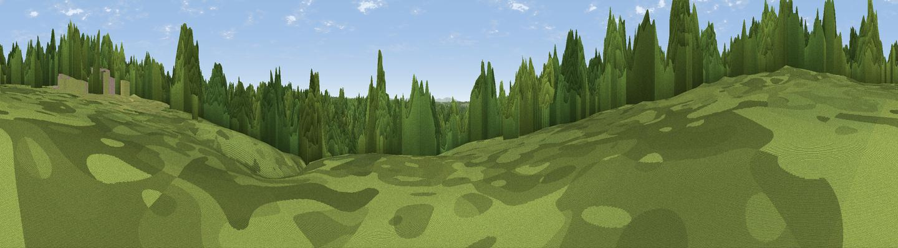

St Leonard's Forest plateau (Barnsnap, near Colgate)
#46190 in England · top 99% of its area beats it · near Colgate · open accessWhere it is
The exact computed spot (TQ 22272 32188). Click the marker for map links.
Public access: this spot lies on mapped open-access land (CRoW Act 2000) — you may roam here on foot. Computed from Natural England's CRoW access layer and OpenStreetMap rights of way — not the legal definitive map. Always verify locally.
The view, rendered

A 360° render of this exact spot computed from the terrain model, tree cover and land cover — summer colours, afternoon light, calibrated against photographs of famous viewpoints. Real trees, hedges and buildings will differ in detail.
The panorama
Grey silhouette: terrain skyline in each direction (720 bearings, Earth curvature and refraction included). Dashed green: skyline with trees (+15 m) and buildings (+8 m) as obstacles. Blue strip: how far the ground is visible on each bearing.
Where the view opens
Wedge length = distance to the farthest visible ground on that bearing (vegetation-aware). Rings at 10, 25 and 50 km.
What fills the view
83% woodland · 15% grassland · 1% cropland ·
Angular shares of the visible panorama (visual magnitude), not map area. Landscape diversity 0.23 (0–1 Shannon).
Key numbers
More beautiful places nearby
The staircase of upgrades: each row has a higher view potential than everything closer. Driving times are estimates from straight-line distance, calibrated against real road routing — check an actual route before setting out.
| Place | Direction | Drive | Score |
|---|---|---|---|
| Viewpoint near Colgate | SSE · 1 km | ~4 min | 13.3 |
| Viewpoint near Lower Beeding | S · 3 km | ~8 min | 21.6 |
| Viewpoint near Nuthurst | SSW · 5 km | ~12 min | 23.9 |
| Viewpoint near Handcross | SE · 6 km | ~12 min | 26.1 |
| Viewpoint near Kingsfold | WNW · 6 km | ~12 min | 55.0 |
| Viewpoint near Coldharbour | NNW · 14 km | ~25 min | 70.0 |
| Wolstonbury Hill | SSE · 19 km | ~33 min | 79.6 |
| Edburton Hill | S · 21 km | ~36 min | 82.3 |
51.07600, -0.25600 · source: verification · position refined by local search. Computed location — check access rights before visiting.